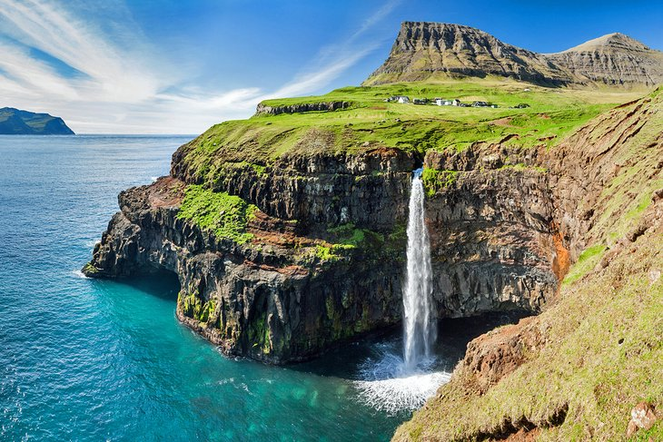
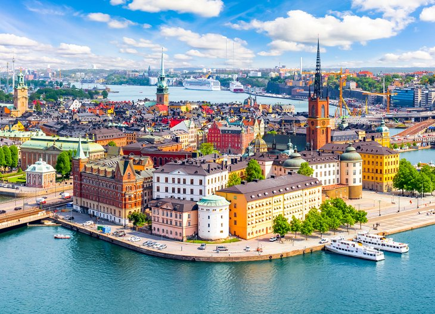
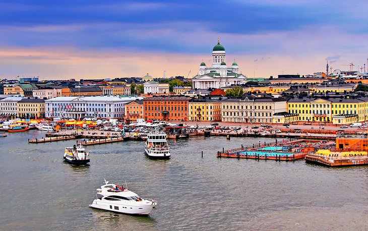

Iceland, a Nordic island nation, is defined by its dramatic landscape with volcanoes, geysers, hot springs and lava fields. Massive glaciers are protected in Vatnajökull and Snæfellsjökull national parks.
Photo Gallery
You will not find any other capital in the world similar to Reykjavik. With its colorful and small houses, calm atmosphere and vibrant culture, it often becomes peoples favorite community in Iceland.One of the most magical places in Iceland, in our opinion, is the Diamond beach. The opportunity to touch the crystal-like glacier chunks is an unforgettable experience. Plus it makes for some unique and fun photos.These sturdy animals have been an inseparable part of Icelanders lives since the first days of the country’s settlement. Horses have played a big part in the old Norse mythology as well as the famous Icelandic sagas. We have over 100 words for their various coat colors and markings, and we just find them absolutely amazing!If you want to reach the historical plane wreck at Solheimasandur beach you will need to walk for an hour. The contrast between the black sand desert and the dramatic plane wreck has made it a very popular photo stop along the South Shore.Huge ice chunks that have broken off a glacier and floated out to the sea have created the world famous Jokulsarlon Glacier Lagoon. This stunning place located in southeast Iceland offers a dramatic view and rich wildlife viewing. There are birds flying all around, and you can even spot seals in the lagoon.
Denmark

Geographical Location: North Europe
Denmark is a Scandinavian country comprising the Jutland Peninsula and numerous islands. It's linked to nearby Sweden via the Öresund bridge.
Photo Gallery
The second largest city in Denmark, Aarhus is home to many photo-worthy attractions, including the living history museum, Den Gamle By.Glistening Sørvágsvatn Lake rushes above the Atlantic Ocean on the island of Vágar. A fascinating natural wonder, this lake, also known as Leitisvatn, is the largest lake in the Faroe Islands.
Norway
Geographical Location: North Europe
Norway is a Scandinavian country encompassing mountains, glaciers and deep coastal fjords.
Photo Gallery
The narrow Geiranger Fjord, a UNESCO World Heritage Site, is surrounded by steep cliffs and roaring waterfalls that plunge straight into the clear blue waters below.The Bryggen historic harbor district and wharf is a UNESCO World Heritage Site famous for the colorful Hanseatic merchant trading buildings lining up the shoreline.
Sweden

Geographical Location: North Europe
Sweden is a Scandinavian nation with thousands of coastal islands and inland lakes, along with vast boreal forests and glaciated mountains.
Photo Gallery
Sweden's northernmost town experiences the aurora borealis dancing over frozen trees more than anywhere else in Scandinavia.Abisko National Park is home to the 440-kilometer-long Kungsleden hiking trail, which crisscrosses along the Scandinavian mountain range and the Abiskojokk river.
Finland

Geographical Location: North Europe
Finland is a Northern European nation bordering Sweden, Norway and Russia.
Photo Gallery
Nuuksio National Park is stunning in the early morning as the sun rises over the forested valley. Rugged boulders and thick, lush forests are perfect for hikes but also geocaching, climbing, and bird-watching.Kemi is Finland's best winter wonderland destination – and that's a lot to say in a country covered in ice and snow for a good part of the year.
Croatia
Geographical Location: South Europe
Croatia, officially the Republic of Croatia, is a country located at the crossroads of Central and Southeast Europe. Its coast lies entirely on the Adriatic Sea.
Photo Gallery
This gorgeous image was snapped from the south walls on Dubrovnik's wall circuit walk. It shows the Lovrijenac and Bokar fortresses on the rocks in the foreground and then parts of the old city sprawling out beyond.So much of Croatia looks like it belongs in a Disney movie, but Vrbnik town on Krk Island in the Kvarner Bay archipelago is a contender for first place.